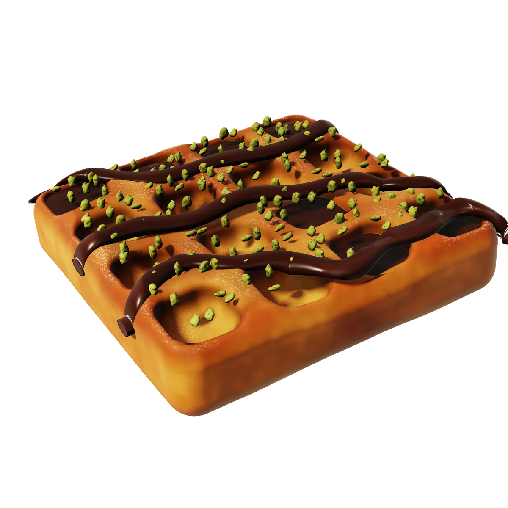
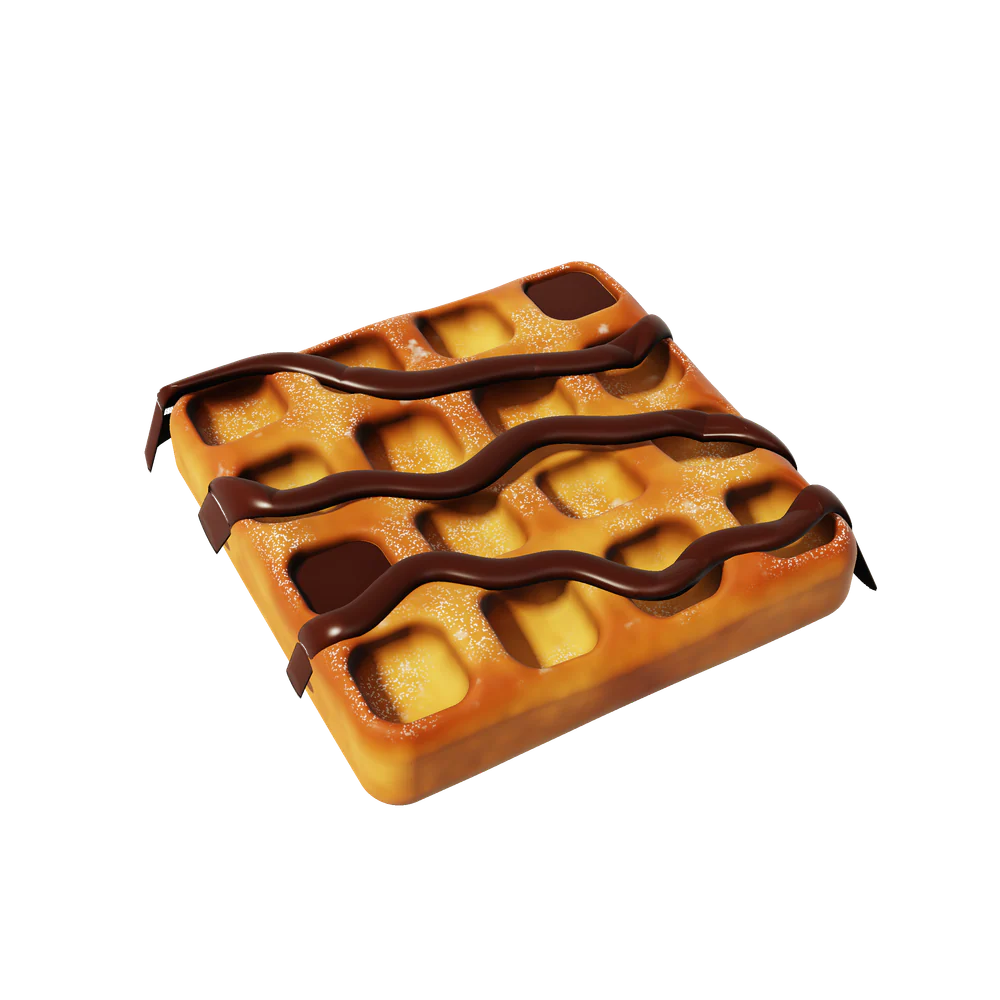
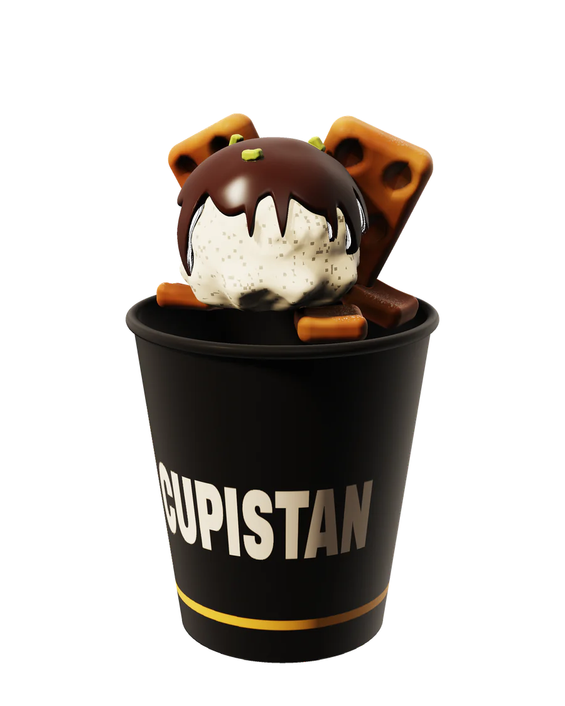
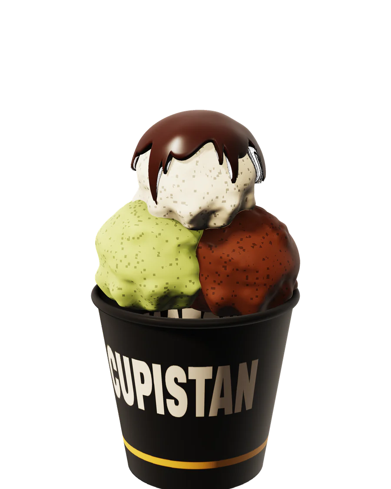
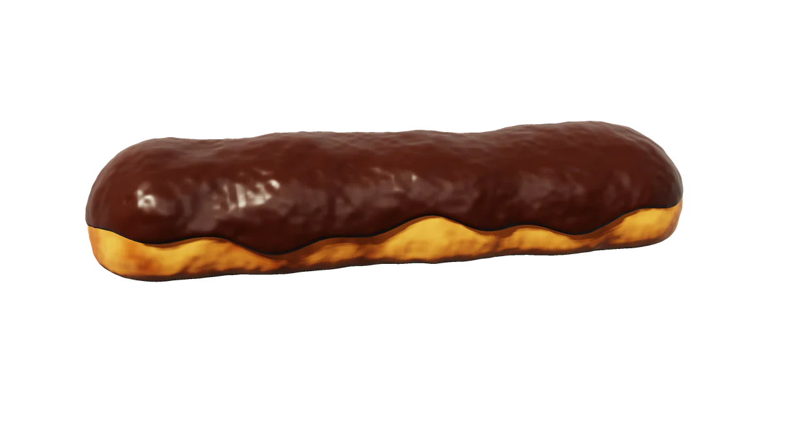
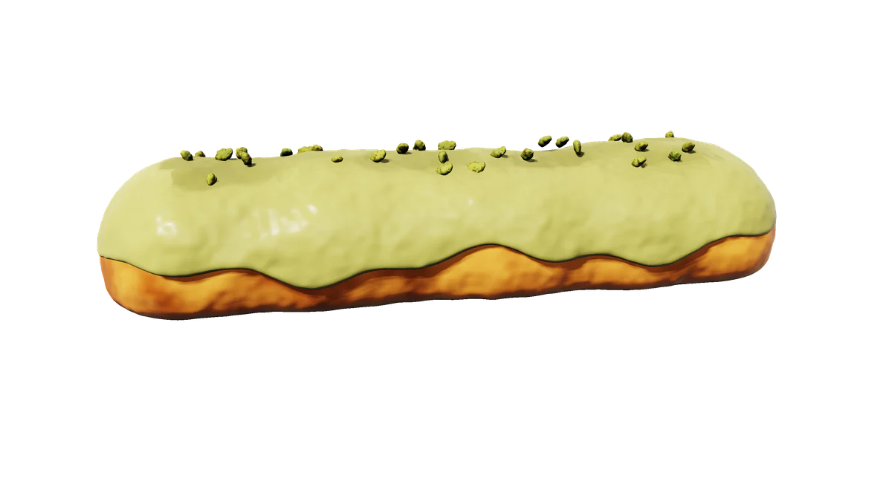
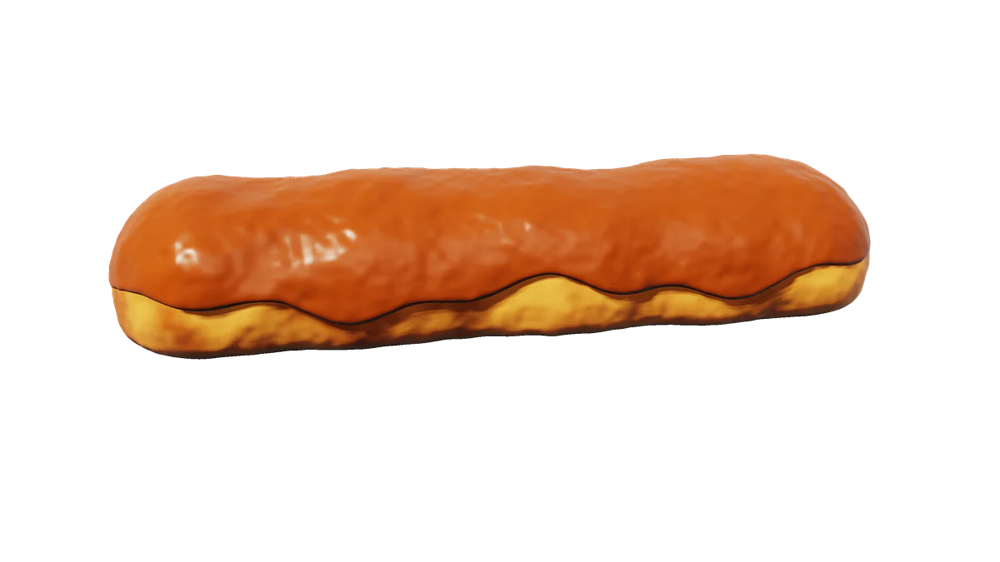
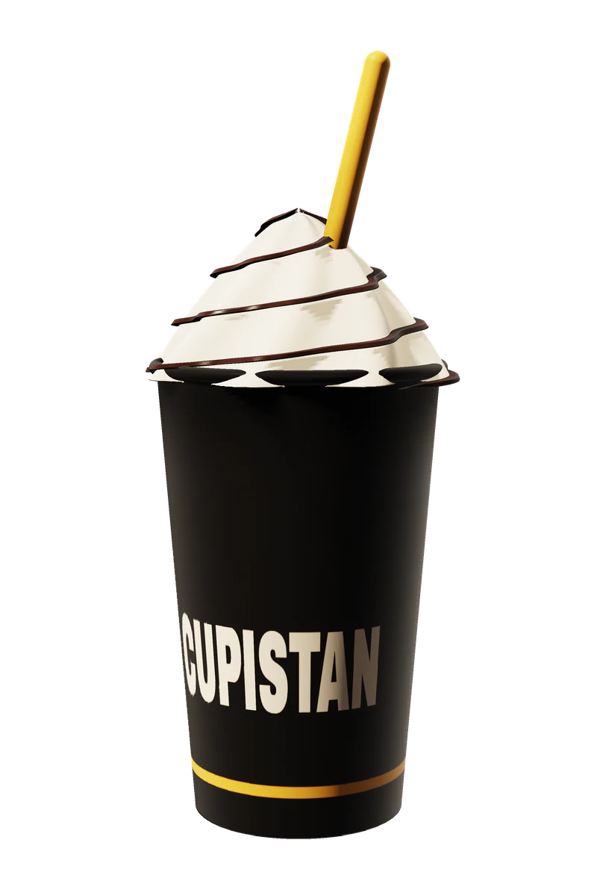
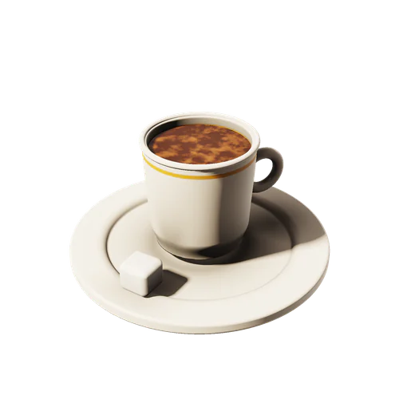

Nº 01Waffle
FıstıklıWaffle
Belçika usulü hamur, bitter çikolata, bol kırık Antep fıstığı. Dört kenarı çıtır, on altı cebi dolu.
420 ₺

Önce waffle. Dört kenar, on altı cep, tek bir çıtırlık.
Sonra çikolata. Ceplere dolar, kenardan taşar.
En son bardak. Waffle tabaktan iner, bardağa girer.
Waffle / Dondurma / Tatlı / İçecek

Nº 01Waffle
Belçika usulü hamur, bitter çikolata, bol kırık Antep fıstığı. Dört kenarı çıtır, on altı cebi dolu.
420 ₺

Nº 02İmza
Waffle parçaları, bir top dondurma, üstünden akan bitter çikolata. Hepsi tek bardakta; yürürken yenir.
260 ₺

Nº 03Dondurma
Üç top, üç karakter: Antep fıstığı, bitter çikolata, sade. Tepesine sıcak çikolata.
195 ₺



Nº 04Tatlı
Bitter çikolata kaplama, vanilyalı krema. Klasik; tartışmaya kapalı. 95 ₺
Antep fıstığı kaplama, üstünde kırık fıstık. Yeşilin en tatlı tonu. 120 ₺
Karamel kaplama, kremalı iç. Bir ısırıkta hem tatlı hem tuzlu. 100 ₺

Nº 05İçecek
Yoğun, soğuk, kremalı. Pipet altın, bardak siyah, gerisi çikolata.
190 ₺

Hikâye — kısa versiyon
Sonra ona bir ülke kurduk.
Cupistan: bardakların ülkesi. Sınırı bardağın kenarı, nüfusu tatlıya hayır diyemeyenler, başkenti Gebze.